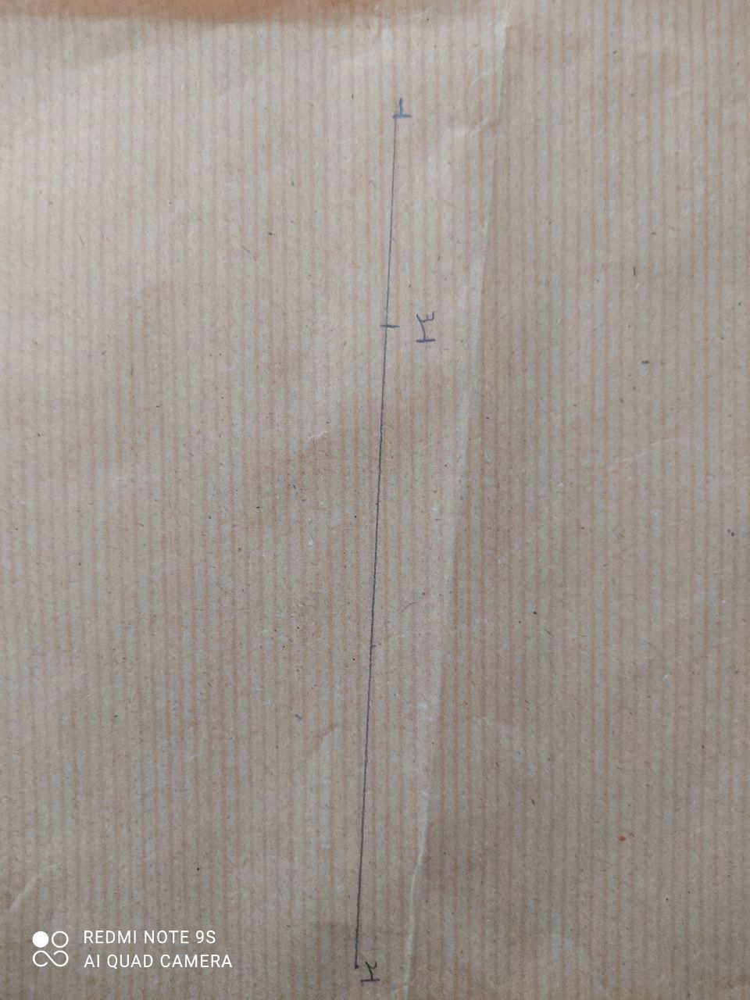
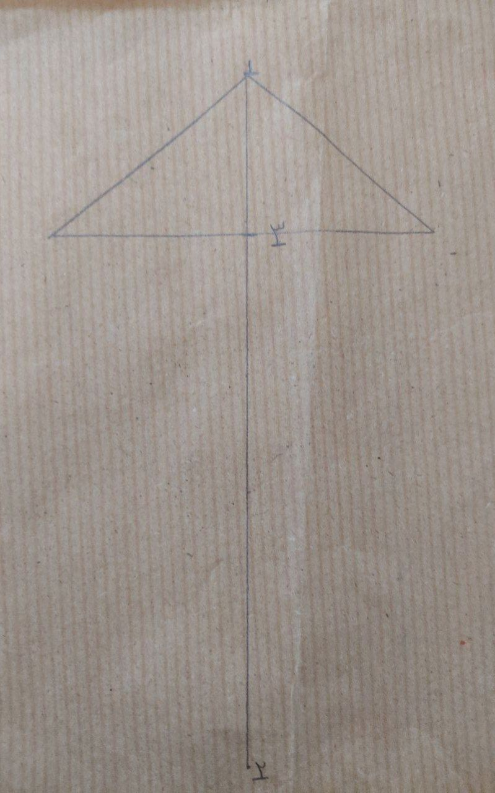
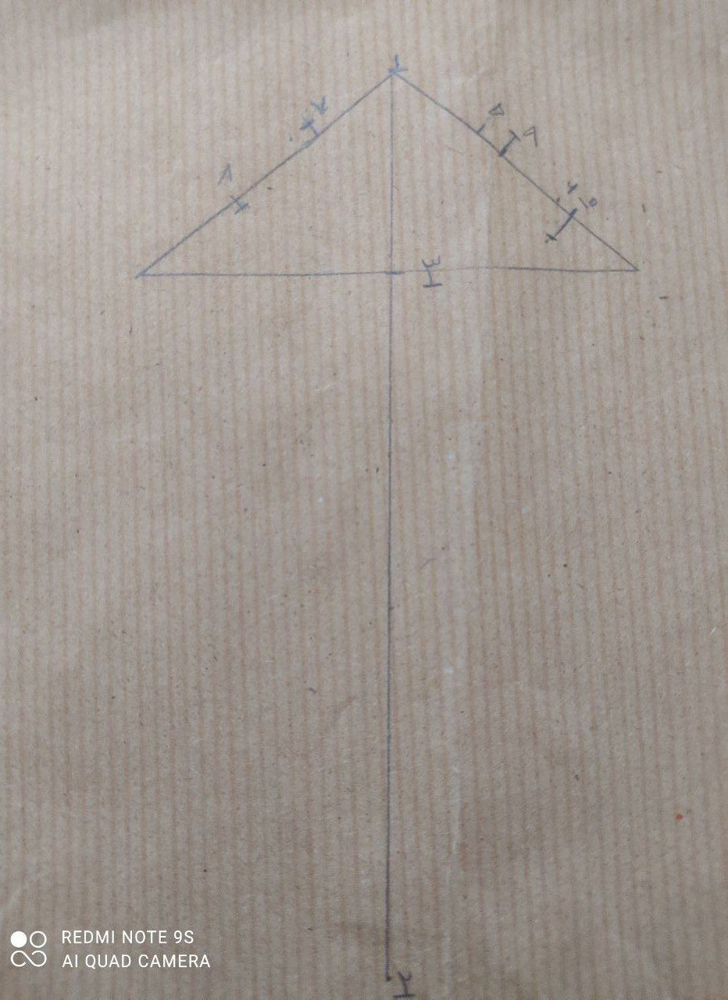
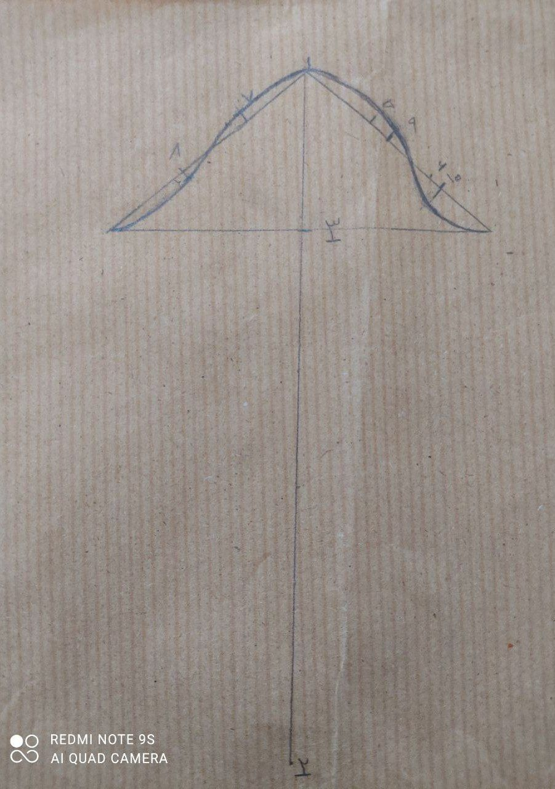
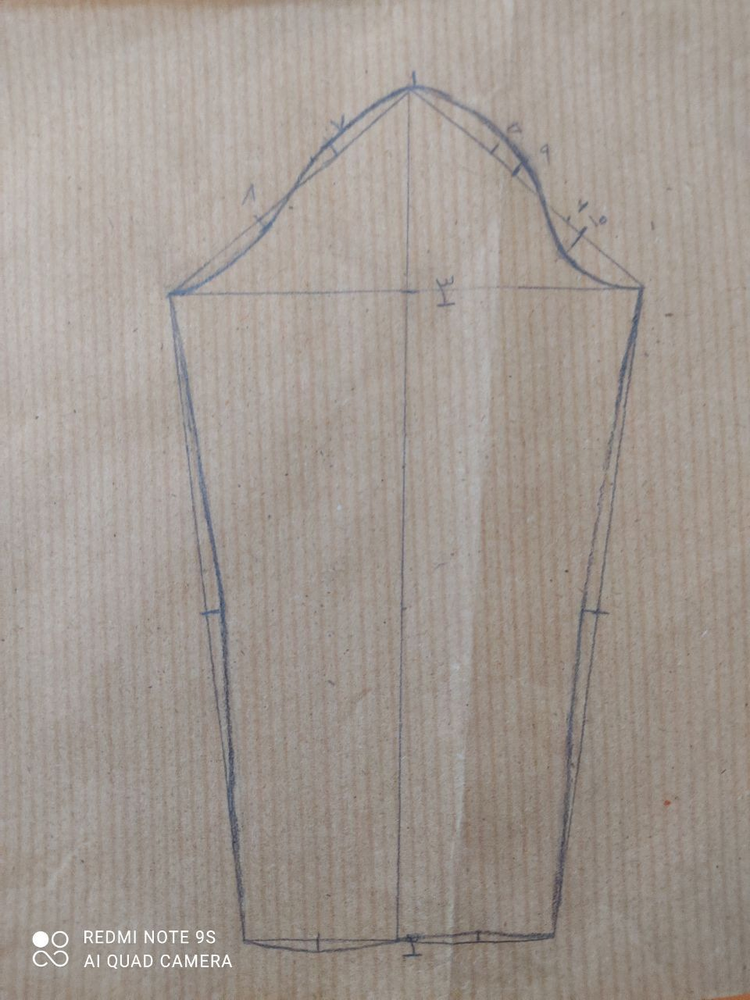

الگو اساس آستین
1-2=قد آستین 1-3=بلندی تاج آستین را رسم می کنیم.
از نقطه 3 خطی عمود رسم میکنیم و به اندازه یک دوم دور استین + آزادی از هر طرف علامت میزنیم
از نقطه 1 به دور بازو ها وصل میکنیم تا شکلی به حالت مثلث به دست آید سپس هر طرف خط را به سه قسمت مساوی تقسیم میکنیم و علامت میزنیم نقاط 5/6/7/8به دست می آید در طرف جلو آستین از نقطه 5 دوسانت پایین میایم و نقطه 9به دست می آید. سپس از نقطه 9تا قسمتی که به خط 3وصل میشود رو اندازه میگیرم و تقسیم بر 2میکنیم نقطه 10 به دست می آید
برای طراحی تاج استین از نقطه9 1.5الی2سانت به سمت بالا میرویم در نقطه 10به اندازه ای که در نقطه بالا رفتیم 0.5+ به سمت پایین میرویم از نقطه 7به اندازه ای که در نقطه 9بالا رفتیم 0.5- بالا میرویم .در نقطه 8به اندازه ای که در نقطه7بالا رفتیم 0.5- به سمت داخل میرویم و تاج آستین را طراحی میکنیم.
از نقطه 2 خطی عمود میکنیم و از هر طرف به اندازه یک دوم دور مچ + آزادی علامت میزنیم و به خط 3 وصل میکنیم.
